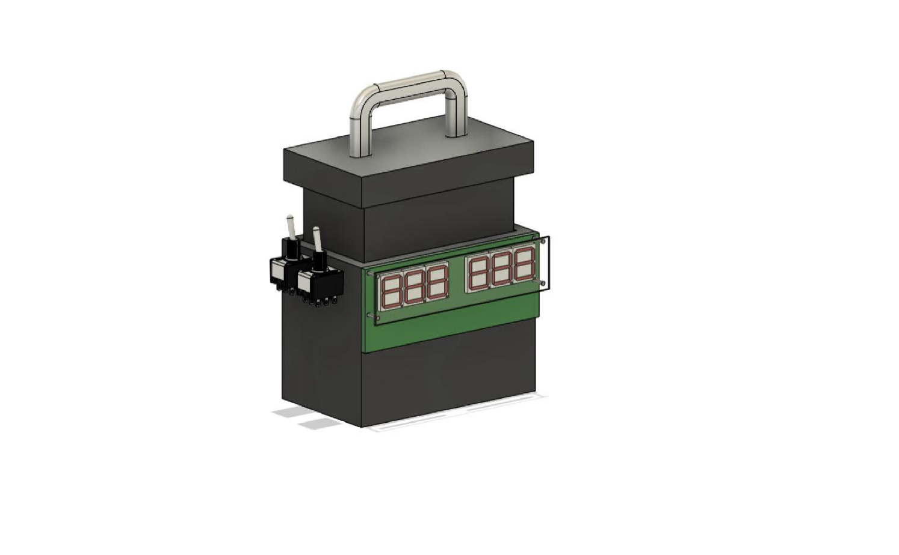

Conceptual design and structural analysis of a manually actuated solar panel cleaning mechanism, addressing PV efficiency losses of up to 45% caused by surface soiling — validated through static FEA in ANSYS Workbench and parametric CAD modelling in Autodesk Fusion 360.
This project presents the conceptual design and structural analysis of a manually actuated solar panel cleaning mechanism, addressing photovoltaic (PV) efficiency losses of up to 45% caused by surface soiling. The system employs a pantograph linkage actuated via a leadscrew and hand crank, enabling controlled sweeping motion across the panel surface. A three-stage cleaning module — electrostatic microfibre dusting, atomised water misting, and rubber-pad wiping — is integrated within a lightweight FRP and Aluminium 6061-T6 frame.
Existing automated and robotic PV cleaning systems, while effective, impose high capital costs and infrastructure requirements that render them impractical for off-grid, modular, or resource-constrained installations. Conventional manual methods such as mop-wiping introduce inconsistent contact pressure, risking micro-abrasion of anti-reflective coatings and non-uniform cleaning coverage. A cost-effective, portable, and mechanically controlled alternative was required.
Mechanism selection involved a comparative evaluation of rail-guided, pulley-based, and pantograph-type linkages, with the scissor-like pantograph selected for its superior force distribution, portability, and absence of auxiliary infrastructure. Full parametric 3D modelling was carried out in Autodesk Fusion 360, followed by static structural FEA in ANSYS Workbench 2025 R1 to validate material selection and assess stress distribution under exaggerated operational loads. Material benchmarking across PVC, FRP, and Al 6061-T6 led to FRP for the connecting links and Al 6061-T6 for the primary frame, achieving a max frame deformation of 0.183 mm under combined loading.
The pantograph mechanism, driven by a self-locking leadscrew, ensures precise, vibration-damped traversal with equal load distribution across the PV surface, eliminating point-load stress on fragile cells. The modular three-stage cleaner head — with Velcro-replaceable microfibre linings and high-pressure atomising nozzles — delivers thorough cleaning while minimising water consumption and abrasion risk.
A clamp-based attach-detach bracket system enables rapid deployment across multiple panel arrays without reinstallation. The actuation system is designed with a motor-upgrade pathway, allowing future semi-automation via direct-drive electric motor replacement of the hand crank.
Despite the design being validated through simulation and deemed structurally feasible, physical fabrication of the prototype could not be completed within the project timeline. The combination of strict academic deadlines, limited access to manufacturing resources, and a demanding concurrent course load made it unfeasible to move beyond the analytical phase. As a result, the project remains a simulation-validated conceptual design, with prototyping and empirical testing identified as immediate next steps upon availability of resources.
